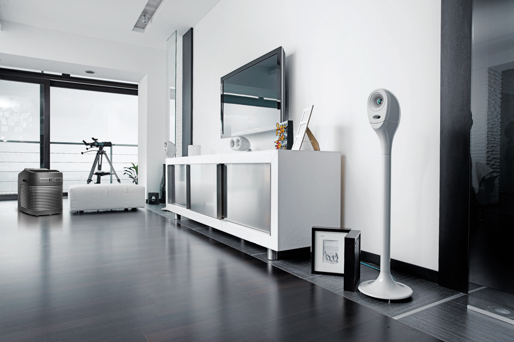
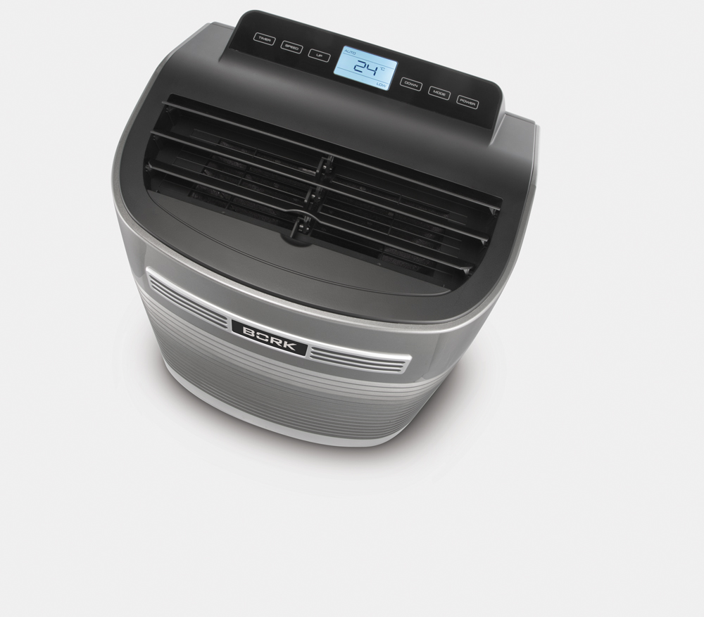
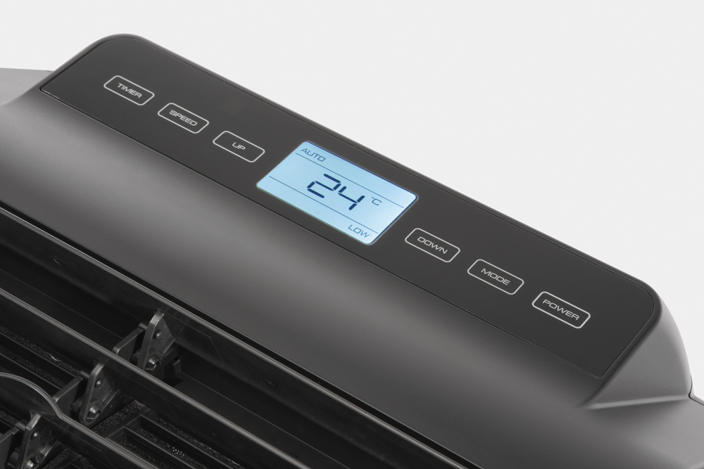
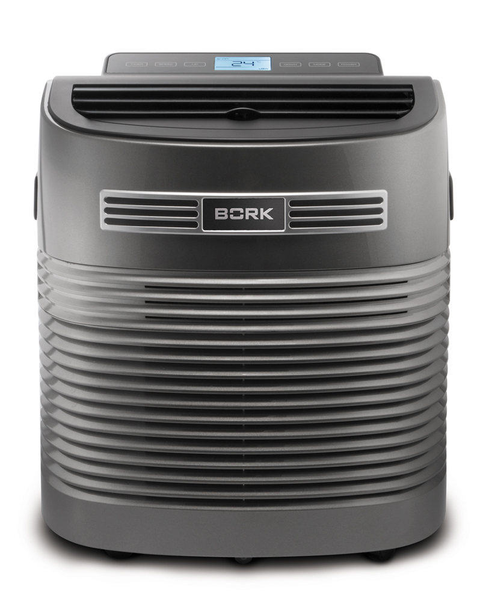

Мобильные кондиционеры
Под этим понятием объеденяют два вида систем: мобильные сплит - системы и мобильные моноблоки. Первые напоминают обыкновенные сплит - системы, за исключением того, что компрессор у них находится во внутреннем блоке. При этом внешний блок, связанный с внутренним устройством гибким трубопроводом, просто вывешивается за окно.
Второй тип представляет собой моноблочную конструкцию. Он охлаждает помещение, сбрасывая излишки тепла через толстый гофрированный шланг, который необходимо вывести в окно или за дверь. Для этого делают специальные отверстия в рамах, поскольку приоткрытые окна и форточки позволяют теплому воздуху проходить внутрь.
Монтаж мобильного кондиционера
Мобильные кондиционеры практически не требуют монтажа. Такой кондиционер готов к работе сразу после покупки, нужно лишь вывести в приоткрытое окно конец гофрированного шланга-воздуховода, или (в случае мобильной сплит - системы) вынести за окно наружный блок.
BORK Y502 - отличительные особенности и функционал
Направление холодного воздушного потока вверх
Исключает причину простудных заболеваний – переохлаждение от воздействия холодного воздушного потока.
Равномерно распределяет холодный воздух по комнате. Холодный воздух расходится в верхних слоях и постепенно опускается вниз.
Автоматический режим
При температуре воздуха выше 25 °C кондиционер работает в режиме охлаждения. Как только температура опускается ниже 25 °C, включается режим вентиляции.
Таймер
Возможность запрограммировать время работы кондиционера от 1 до 24 часов.
Режим вентиляции
В данном режиме кондиционер обеспе-чивает только цирку-ляцию воздуха в помещении, не охлаждая его.
Система автоматического выпаривания воды
Водный конденсат используется по кругу для охлаждения конденсатора, что повышает эффективность охлаждения и экономит электроэнергию. Если внутренний резервуар переполнен, на дисплее отобразится индикатор FL и компрессор перестанет работать. После выключения кондиционера открутите крышку резервуара, удалите водяной кран и слейте воду.
Предупреждение замерзания конденсатора
Если температура конденсатора опустится ниже критической, компрессор выключится автоматически для того, чтобы предотвратить дальнейшее замерзание (подождите 10–15 минут, пока конденсатор не разморозится) Индикация Е4 на дисплее при разморозке.
Панель управления
TIMER - установка таймера на включение/выключение. Установка времени в интервале от 1 до 24 часов
SPEED - выбор скорости работы вентилятора: (HIGH) высокая, (HIGH) средняя, (LOW) низкая
UP/DOWN - установка температуры или времени в режиме таймера. Нажмите обе кнопки для перехода из режима градусов по цельсию (°C) в градусы по Фаренгейту (°F)
MODE - выбор режима работы Режим охлаждения (Желаемую температуру в помещении можно выбрать в интервале от 17 °С до 30°С), Режим вентиляции и Автоматический режим.
POWER - включение/выключение.
Пульт дистанционного управления
UP/DOWN - установка температуры или времени в режиме таймера.
MODE - выбор режима работы.
FAN - выбор скорости работы вентилятора.
°С <> °F - переключение режима измерения температуры между градусами по цельсию и по Фаренгейту.
LOCK/UNLOCK - блокировка/разблокировка кнопок панели управления на кондиционере. Управление пультом ДУ будет доступно (для нажатия кнопки используйте иголку или тонкий стилус).
POWER - включение/выключение кондиционера
SWING - управление воздушным потоком в вертикальной плоскости.
TIMER - установка таймера.
Технические характеристики

Площадь охлаждения: до 25м2
Охлаждение: 9000 Btu (2,6 кВт)
Потребляемая мощность: 1000 Вт
Вентиляция: 260 м3
Уровень шума: < 50 дБ
Габаритные размеры: (ВхШхГ) 54х46х46 см
Скоростей вентилятора: 3
Длина шланга удаления воздуха: 0,6 – 1,5 м
Номинальная сила тока: 4,5 А
Максимальное давление: 5,5 МПа
Минимальное давление: 1,7 МПа
Хладагент: R410A
Вес: 27 кг